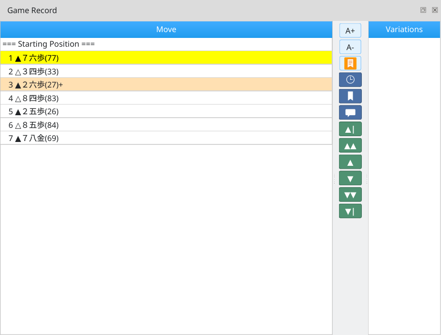
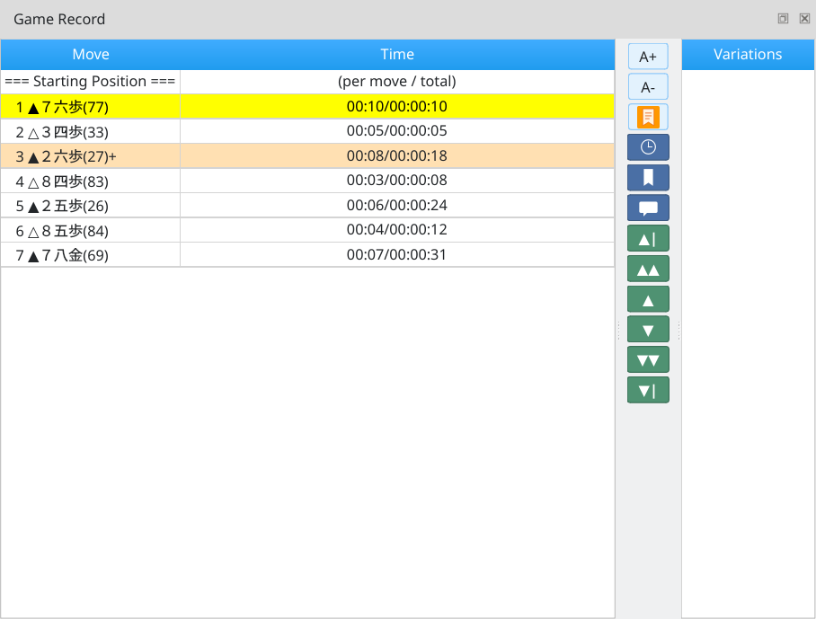
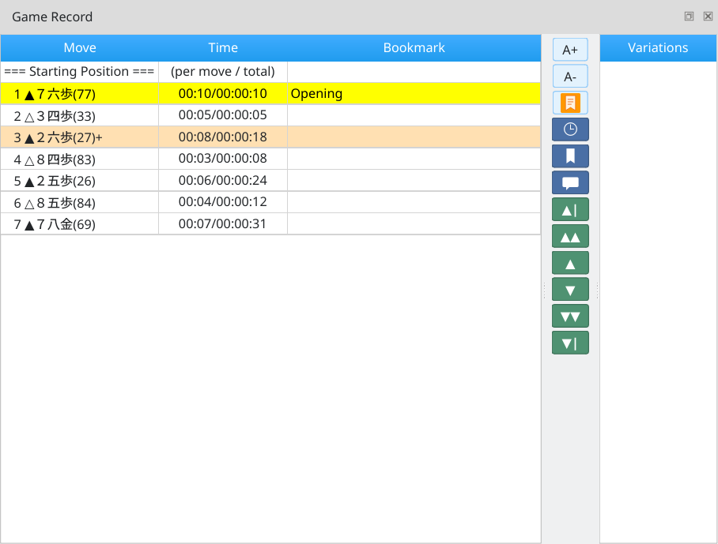
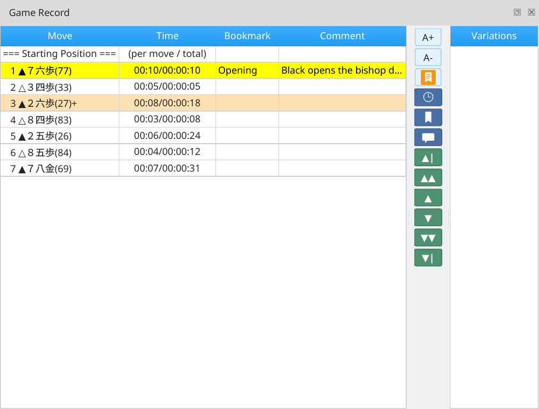
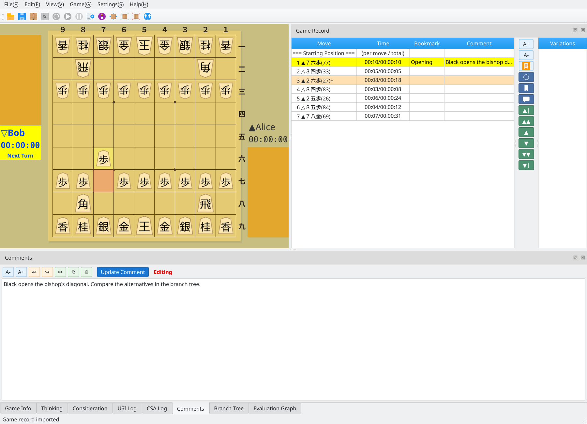
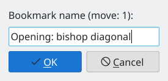
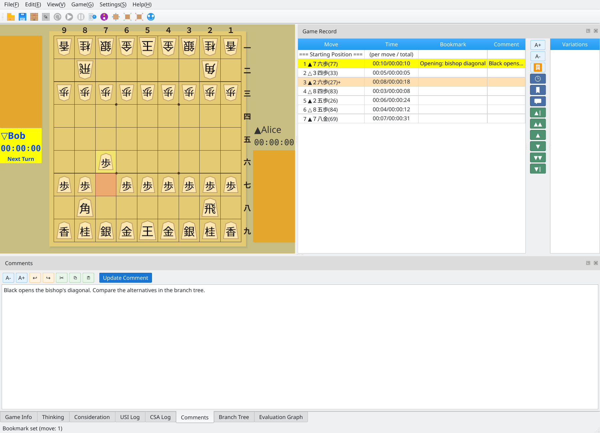
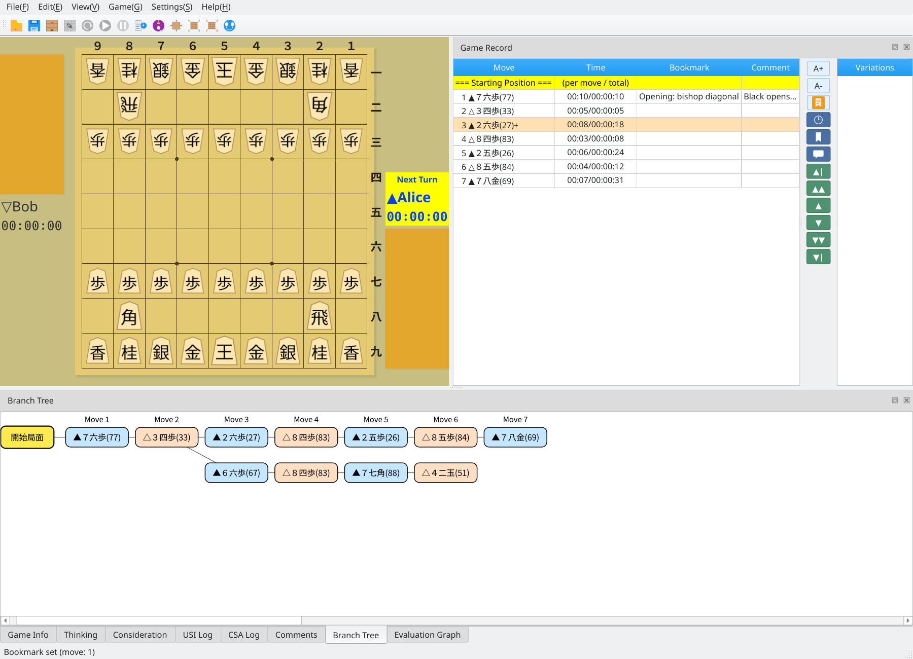
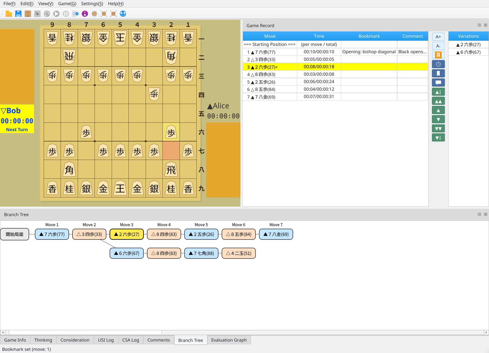
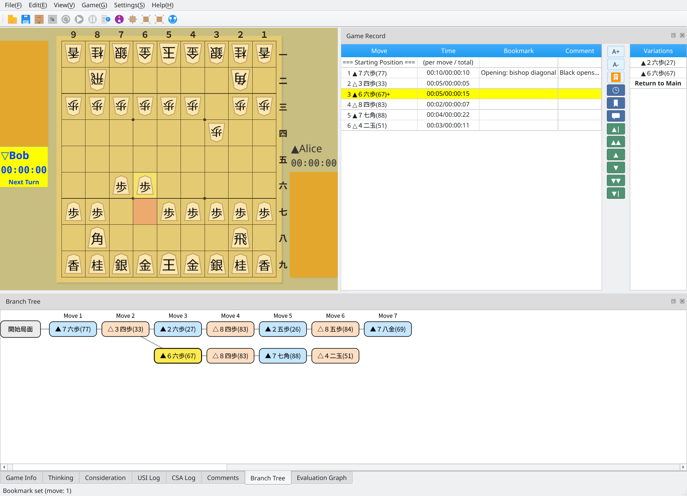

View moves, comments, bookmarks, and variations in the game record dock
Screenshots were captured on Linux with the English interface.
Show only the information you need in the game record dock
The basic game record view shows a list of moves. Use the buttons on the right-hand toolbar to show or hide additional columns.

Moves only: the basic game record view
Click the clock button on the toolbar to show the time column. Each row displays the time spent on that move and the total time spent, in the format Move / Total.

Time column: view the time spent on each move and the cumulative total
Click the bookmark button on the toolbar to show the bookmark column, which displays the bookmark name assigned to each move.

Bookmark column: view bookmark names alongside time spent
Click the comment button on the toolbar to show the comment column. It displays comments assigned to each move. The time, bookmark, and comment columns can be toggled independently.

All columns: moves, time spent, bookmarks, and comments
Add and edit comments for individual moves
Select the move you want to annotate and enter text in the game record comment area at the bottom of the window. Click Update Comment to save it.

Editing a comment: enter text in the comment area and click Update Comment
Saved comments appear in the game record dock's comment column. Selecting a move also shows the full comment in the comment area at the bottom of the window.
Saved comment: reflected in both the comment column and the comment area
Bookmark important positions for quick access
Select the move to bookmark and click Edit Bookmark on the toolbar. Enter a name in the dialog and click OK.

Edit Bookmark dialog: enter a bookmark name and save
Bookmark names appear in the game record dock's bookmark column next to their moves. To remove a bookmark, clear its name and save.

Bookmark added: its name appears in the bookmark column
Explore and navigate alternative lines in records with variations
When you load a record with variations, the game record dock initially shows the main line. The Branch Tree tab at the bottom presents the main line and variations in a tree.

Record with variations: main-line moves and the Branch Tree
Moves with variations are shown in orange and prefixed with a + sign, making alternative continuations easy to find. Selecting such a move lists its alternatives in the variation candidates area on the right.

Moves with variations: orange text and a + sign, with alternatives listed on the right
Click a move in the variation candidates area to switch to that line. The game record dock displays the selected variation and the board updates accordingly.

Navigate to a variation: click a candidate to explore an alternative line